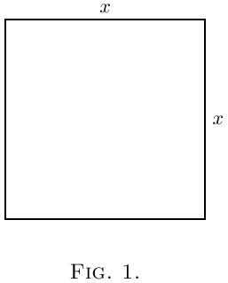
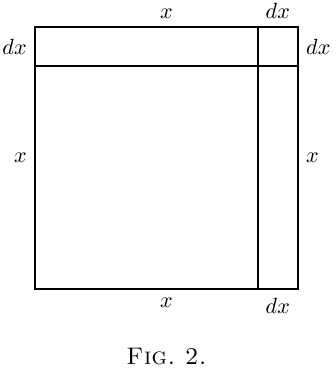
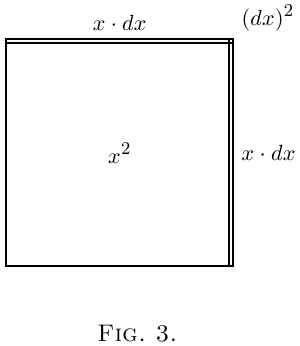

We shall find that in our processes of calculation we have to deal with small quantities of various degrees of smallness.
We shall have also to learn under what circumstances we may consider small quantities to be so minute that we may omit them from consideration. Everything depends upon relative minuteness.
Before we fix any rules let us think of some familiar cases. There are $60$ minutes in the hour, $24$ hours in the day, $7$ days in the week. There are therefore $1440$ minutes in the day and $10080$ minutes in the week.
Obviously $1$ minute is a very small quantity of time compared with a whole week. Indeed, our forefathers considered it small as compared with an hour, and called it “one minùte,” meaning a minute fraction–namely one sixtieth–of an hour. When they came to require still smaller subdivisions of time, they divided each minute into $60$ still smaller parts, which, in Queen Elizabeth's days, they called “second minùtes” (i.e.: small quantities of the second order of minuteness). Nowadays we call these small quantities of the second order of smallness “seconds.” But few people know why they are so called.
Now if one minute is so small as compared with a whole day, how much smaller by comparison is one second!
Again, think of a farthing as compared with a sovereign: it is barely worth more than $\frac{1}{1000}$ part. A farthing more or less is of precious little importance compared with a sovereign: it may certainly be regarded as a small quantity. But compare a farthing with £$1000$: relatively to this greater sum, the farthing is of no more importance than $\frac{1}{1000}$ of a farthing would be to a sovereign. Even a golden sovereign is relatively a negligible quantity in the wealth of a millionaire.
Now if we fix upon any numerical fraction as constituting the proportion which for any purpose we call relatively small, we can easily state other fractions of a higher degree of smallness. Thus if, for the purpose of time, $\frac{1}{60}$ be called a small fraction, then $\frac{1}{60}$ of $\frac{1}{60}$ (being a small fraction of a small fraction) may be regarded as a small quantity of the second order of smallness.*
Or, if for any purpose we were to take $1$ per cent. (i.e.: $\frac{1}{100}$) as a small fraction, then $1$ per cent. of $1$ per cent. (i.e.: $\frac{1}{10,000}$) would be a small fraction of the second order of smallness; and $\frac{1}{1,000,000}$ would be a small fraction of the third order of smallness, being $1$ per cent. of $1$ per cent. of $1$ per cent.
Lastly, suppose that for some very precise purpose we should regard $\frac{1}{1,000,000}$ as “small.” Thus, if a first-rate chronometer is not to lose or gain more than half a minute in a year, it must keep time with an accuracy of $1$ part in $1,051,200$. Now if, for such a purpose, we regard $\frac{1}{1,000,000}$ (or one millionth) as a small quantity, then $\frac{1}{1,000,000}$ of $\frac{1}{1,000,000}$, that is $\frac{1}{1,000,000,000,000}$ (or one billionth) will be a small quantity of the second order of smallness, and may be utterly disregarded, by comparison.
Then we see that the smaller a small quantity itself is, the more negligible does the corresponding small quantity of the second order become. Hence we know that in all cases we are justified in neglecting the small quantities of the second–or third (or higher)–orders, if only we take the small quantity of the first order small enough in itself.
But, it must be remembered, that small quantities if they occur in our expressions as factors multiplied by some other factor, may become important if the other factor is itself large. Even a farthing becomes important if only it is multiplied by a few hundred.
Now in the calculus we write $dx$ for a little bit of $x$. These things such as $dx$, and $du$, and $dy$, are called “differentials,” the differential of $x$, or of $u$, or of $y$, as the case may be. [You read them as dee-eks, or dee-you, or dee-wy.] If $dx$ be a small bit of $x$, and relatively small of itself, it does not follow that such quantities as $x · dx$, or $x^2\, dx$, or $a^x\, dx$ are negligible. But $dx × dx$ would be negligible, being a small quantity of the second order.
A very simple example will serve as illustration.
Let us think of $x$ as a quantity that can grow by a small amount so as to become $x + dx$, where $dx$ is the small increment added by growth. The square of this is $x^2 + 2x · dx + (dx)^2$. The second term is not negligible because it is a first-order quantity; while the third term is of the second order of smallness, being a bit of, a bit of $x^2$. Thus if we took $dx$ to mean numerically, say, $\frac{1}{60}$ of $x$, then the second term would be $\frac{2}{60}$ of $x^2$, whereas the third term would be $\frac{1}{3600}$ of $x^2$. This last term is clearly less important than the second. But if we go further and take $dx$ to mean only $\frac{1}{1000}$ of $x$, then the second term will be $\frac{2}{1000}$ of $x^2$, while the third term will be only $\frac{1}{1,000,000}$ of $x^2$.


Geometrically this may be depicted as follows:
Draw a square (Figure 1) the side of which we will
take to represent $x$. Now suppose the square to
grow by having a bit $dx$ added to its size each
way. The enlarged square is made up of the original
square $x^2$, the two rectangles at the top and on the
right, each of which is of area $x · dx$ (or together
$2x · dx$), and the little square at the top right-hand
corner which is $(dx)^2$. In Figure 2 we have taken $dx$ as
quite a big fraction of $x$–about $\frac{1}{5}$. But suppose we
had taken it only $\frac{1}{100}$–about the thickness of an
inked line drawn with a fine pen. Then the little
corner square will have an area of only $\frac{1}{10,000}$ of $x^2$,
and be practically invisible. Clearly $(dx)^2$ is negligible
if only we consider the increment $dx$ to be itself
small enough.

Let us consider a simile.
Suppose a millionaire were to say to his secretary:
next week I will give you a small fraction of any
money that comes in to me. Suppose that the
secretary were to say to his boy: I will give you a
small fraction of what I get. Suppose the fraction
in each case to be $\frac{1}{100}$ part. Now if Mr. Millionaire
received during the next week £$1000$, the secretary
would receive £$10$ and the boy $2$ shillings. Ten
pounds would be a small quantity compared with
£$1000$; but two shillings is a small small quantity
indeed, of a very secondary order. But what would
be the disproportion if the fraction, instead of being $\frac{1}{100}$,
had been settled at $\frac{1}{1000}$ part? Then, while
Mr. Millionaire got his £$1000$, Mr. Secretary would
get only £$1$, and the boy less than one farthing!
The witty Dean Swift*
once wrote:
An ox might worry about a flea of ordinary
size–a small creature of the first order of smallness.
But he would probably not trouble himself about a
flea's flea; being of the second order of smallness, it
would be negligible. Even a gross of fleas' fleas
would not be of much account to the ox.
So, Nat'ralists observe, a Flea
Hath smaller Fleas that on him prey.
And these have smaller Fleas to bite 'em,
And so proceed ad infinitum."
Next →
Main Page ↑